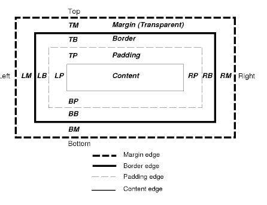
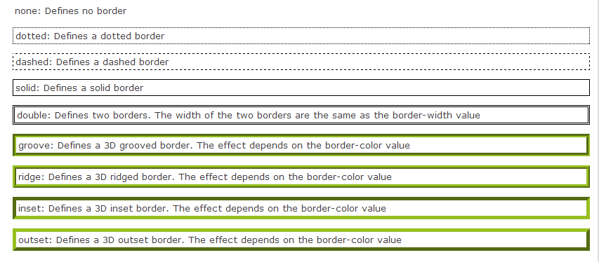

Introduction
Before delving into this topic, it is useful to mention the 'box model' of css. In this model all HTML elements can be considered as boxes. The CSS box model involves a box that wraps around HTML elements, and it consists of: margins, borders, padding, and the actual content.
Diagrammatically it looks like this:

In basic terms, padding is the space between the element (object or image) and the border, whereas the margin is the space outside the border.
Margin
- Clears an area around the border. The margin does not have a background color, it is completely transparent
Border
- A border that goes around the padding and content. The border is inherited from the color property of the box
Padding
- Clears an area around the content. The padding is affected by the background color of the box
Content
- The content of the box, where text and images appear
Margins and Padding are the two most commonly used properties for spacing out elements on a page. You need to remember that when calculating the size of an element you must also include any Margin, border and padding settings in your calculation. In the example below you would need to add a further 60px to the size of the h2 elements:
The rule of thumb about when to choose between using margins and padding is:
- Use margin to separate the block from things outside it
- Use padding to move the contents away from the edges of the block.
Margins
Margins add space around the outer edge of the element. Using the margin property, you can define all four margins to be the same. Or you can set all four separately with the same property:
margin: top right bottom left;
Or if you only want to set the margin on one specific side, you can use the margin-* properties (ie. margin-top, margin-right, margin-bottom, margin-left). This property can have from one to four values.
Examples:
margin:10px 5px 15px 20px;
top margin is 10px
right margin is 5px
bottom margin is 15px
left margin is 20px
margin:10px 5px 15px;
top margin is 10px
right and left margins are 5px
bottom margin is 15px
margin:10px 5px;
top and bottom margins are 10px
right and left margins are 5px
margin:10px;
all four margins are 10px
Note: Negative values are allowed.
Borders
The CSS border properties allow you to specify the style and color of an element's border.
The properties that can be set, are (in order): border-width, border-style, and border-color.
This example from http://www.w3schools.com/css/css_border.asp gives a complete picture of the options available:

Padding
Padding adds space around the inner edge of the element. Using the padding property, you can define all four sides to have the same padding, or you can set all four separately with the same property:
padding : top right bottom left;
Of if you only want to set the padding on one specific side, you can use the padding-* properties (ie. padding-left, padding-top, padding-right, padding-bottom).
Examples:
padding:10px 5px 15px 20px;
top padding is 10px
right padding is 5px
bottom padding is 15px
left padding is 20px
padding:10px 5px 15px;
top padding is 10px
right and left padding are 5px
bottom padding is 15px
padding:10px 5px;
top and bottom padding are 10px
right and left padding are 5px
padding:10px;
all four paddings are 10px
Note: Negative values are not allowed.